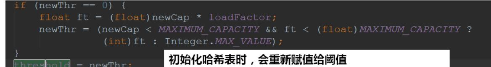

本文主要是对 Java 集合的介绍
概述
Collection 接口
- List (Vector,LinkedList,ArrayList,CopyOnWriteArrayList)
- Set (HashSet,LinkedHashSet,TreeSet)
Map 接口
- (HashMap,LinkedHashMap,TreeMap,ConcurrentHashMap)
List 和 Set 是集合类型，List的特点是插入有序的(存储顺序和取出一致)，元素是可重复的；
Set 的特点是插入无序，元素不可重复的。 Map 是key-value型的，
如果要保持插入顺序的，可以选择 LinkedHashMap, 如果要排序，可以选择
TreeMap。
集合Collection
数组和集合的区别
数组的长度固定，集合的长度可变
数据既可以存储基本数据类型，也可以存储引用数据类型；
集合只能存储引用类型（ int 会自动装箱成 Interger ）
Collection 大致体系结构
- Collection 体系
- Collection接口 功能
迭代器（Iterator）
Collection的源码中继承了Iterable这个接口，它有iterator()这个方法，
返回的是Iterator。
Iterator也是一个接口，它有三个方法：
- hasNext()
- next()
- remove()
我们遍历集合(Collection)的元素都可以使用Iterator，至于它的具
体实现是以内部类的方式实现的。
List 集合
List 集合有三个重要的子类：
- ArrayList 底层数据结构是数组，线程不安全
- LinkedList 底层数据结构是链表，线程不安全
- Vector 底层数据结构是数组，线程安全
ArrayList
ArrayList解析
ArrayList属性
ArrayList底层其实就是一个数组，ArrayList中有扩容这么个概念，
正因为它扩容，所以它能够实现“动态”增长。
构造方法

Add方法
- add(E e)
步骤：
- 检查是否要扩容
- 插入元素
public boolean add(E e) {
ensureCapacityInternal(size + 1); // Increments modCount!!
elementData[size++] = e;
return true;
}方法作用：
- 确认list容量，尝试容量加一，看看有没有必要
- 添加元素

总结： add(E e)首先检查数组容量是否足够，足够则直接添加，
不够则括容，扩容到原来的1.5倍，第一次扩容后，如果容量还是小
于minCapacity，就将容量扩充为minCapacity。
- add(int index, E element)
步骤：
- 检查角标
- 空间检查，如果有需要则进行扩容
- 插入元素
插⼊的实现:
与扩容相关ArrayList的add方法底层其实都是 arraycopy() 来实现的。
该方法是由C/C++来编写的，并不是由Java实现
get方法
- 检查角标
- 返回元素
// 检查⻆标
private void rangeCheck(int index) {
if (index >= size)
throw new IndexOutOfBoundsException(outOfBoundsMsg(index));
}
// 返回元素
E elementData(int index) {
return (E) elementData[index];
}set方法
- 检查角标
- 替换元素
- 返回旧值
remove方法
- 检查角标
- 删除元素
- 计算出需要移动的个数，并移动
- 设置为null，让GC回收
细节说明
- ArrayList是基于动态数组实现的，在增删时候，需要数组的拷贝复制。
- ArrayList的默认初始化容量是10，每次扩容时候增加原先容量的一半，也就是变为原来的1.5倍
- 删除元素时不会减少容量，若希望减少容量则调用trimToSize()
- 它不是线程安全的。它能存放null值。
Vector 和 ArrayList 区别
- Vector与ArrayList一样，也是通过数组实现的，不同的是它支持线程的同步，
即某一时刻只有一个线程能够写Vector，避免多线程同时写而引起的不一致性，
但实现同步需要很高的花费，因此，访问它比访问ArrayList慢。 - 在要求非同步的情况下，我们一般都是使用ArrayList来替代Vector的。
如果想要ArrayList实现同步，可以使用Collections的方法：List list = Collections.synchronizedList(new ArrayList(...));,
就可以实现同步了。
还有另一个区别：ArrayList在底层数组不够用时在原来的基础上扩展0.5倍，Vector是扩展1倍。
LinkedList
LinkedList 解析
LinkedList底层是双向链表
从结构上，我们还看到了LinkedList实现了Deque接口，因此，我们可以操作LinkedList像操作队列
和栈那样。
LinkedList 属性
构造方法
add方法
public boolean add(E e) {
linkLast(e);
return true;
}void linkLast(E e) {
final Node<E> l = last;
final Node<E> newNode = new Node<>(l, e, null);
last = newNode;
if (l == null)
first = newNode;
else
l.next = newNode;
size++;
modCount++;
}remove方法
public boolean remove(Object o) {
if (o == null) {
for (Node<E> x = first; x != null; x = x.next) {
if (x.item == null) {
unlink(x);
return true;
}
}
} else {
for (Node<E> x = first; x != null; x = x.next) {
if (o.equals(x.item)) {
unlink(x);
return true;
}
}
}
return false;
}E unlink(Node<E> x) {
// assert x != null;
final E element = x.item;
final Node<E> next = x.next;
final Node<E> prev = x.prev;
if (prev == null) {
first = next;
} else {
prev.next = next;
x.prev = null;
}
if (next == null) {
last = prev;
} else {
next.prev = prev;
x.next = null;
}
x.item = null;
size--;
modCount++;
return element;
}双向链表中删除结点其实就是下图中的操作：
get方法
public E get(int index) {
checkElementIndex(index); //抛出越界异常
return node(index).item;
}Node<E> node(int index) {
// assert isElementIndex(index);
//下标<长度的一半，从头结点遍历，否则从尾遍历
if (index < (size >> 1)) {
Node<E> x = first;
for (int i = 0; i < index; i++)
x = x.next;
return x;
} else {
Node<E> x = last;
for (int i = size - 1; i > index; i--)
x = x.prev;
return x;
}
}List集合总结
ArrayList:
- 底层实现是数组
- 默认初始化容量是10，扩容后为原来的1.5倍
- 在增删时候，需要数组的拷贝复制（native方法有c/c++实现）
LinkedList:
- 底层实现是链表
Vector:
底层是数组，现在已经很少用，被ArrayList替代，原因有2个：
- Vector 所用方法都是同步的，有性能损失
- Vector 扩容后为原来的2倍，相比于ArrayList消耗更多的内存
Map 集合
散列表
散列表为每个对象计算出一个整数，称为散列码。根据这些计
算出来的整数(散列码)保存在对应的位置上！
在Java中，散列表用的是链表数组实现的，每个列表称之为桶。
一个桶上可能会遇到被占用的情况(hashCode散列码相同，
就存储在同一个位置上)，这种情况是无法避免的，这种现象称之为：散列冲突
- 在JDK1.8中，桶满时会从链表变成平衡二叉树
如果散列表太满，是需要对散列表再散列，创建一个桶数更多的散列表，并将原
有的元素插入到新表中，丢弃原来的表
- 装填因子(load factor)决定了何时对散列表再散列
- 装填因⼦默认为0.75，如果表中超过了75%的位置已经填入了元素，那么这个表就会用双倍的桶数
自动进行再散列
红黑树
利用二叉查找树（中序遍历是递增）的特性，我们一般可以很快查找出对应元素。
但是二叉查找树在极端情况下（线性）效果不好，改进后为平衡二叉树。
红黑树是平衡二叉树的一种。
2-3树
在二叉查找树的结点插入上无法避免偏向问题。
2-3树的插入可以保持树的平衡。
红黑树
由于2-3树为了保持平衡性，在维护的时候是需要大量的节点交换的！这些变换在实
际代码中是很复杂，红黑树是对2-3查找树的改进，它能以一种统的方式完成所有变换。
红黑树用的是也是两种方式来替代2-3树不断的节点交换操作：
- 旋转：顺时针旋转和逆时针旋转
- 反色：交换红黑的颜色
这两个实现比2-3树交换节点（合并，分解）要方便一点。
红黑树为了保持平衡，还制定了一些约束：
1.红黑树是二叉搜索树
2.根节点是黑色
3.每个叶子节点都是黑色的空节点。
4.每个红色节点的子节点都是黑色（每个叶子节点到根的所有路径上不能有连续两个红色节点）。
5.从任一节点到其每个叶子节点的所有路径都包含相同数量的黑色节点（每一条链上的黑色节点数量必须相等，“黑高“）。HashMap
HashMap 继承结构
HashMap 属性
成员属性有这么几个：
hashMap 的一个内部类 Node：
我们可以简单总结出HashMap：
- 无序，允许为null，非同步
- 底层由散列表（哈希表）实现
- 初始容量和装载因子对HashMap影响大
HashMap 方法
构造方法
HashMap的构造方法有4个：
tableSizeFor():
可以看到，是将2的整数幂的数赋给threshold。
- threshold这个成员变量是阈值，决定了是否要将散列表再散列。它的值应该是： capacity *
loadFactor 才对的
这里仅仅是一个初始化，当创建哈希表的时候，它会重新赋值

put方法
put方法可以说是HashMap的核心:
计算哈希值：
我们是根据key的哈希值来保存在散列表中的，我们表默认的初始容量是16，要放到散列表中，就是0-
15的位置上。也就是 tab[i = (n - 1) & hash] 。可以发现的是：在做 & 运算的时候，仅仅是后4位
有效,那如果我们key的哈希值高位变化很大，低位变化很小。直接拿过去做 & 运算，这就会导致计算出
来的Hash值相同的很多。
设计者将key的哈希值的高位也做了运算(与高16位做异或运算，使得在做&运算时，此时的低位实际
上是高位与低位的结合)，这就增加了随机性，减少了碰撞冲突的可能性！
具体流程：
get方法
getNode():
remove方法
removeNode():
HashMap 与 HashTable 对比
从存储结构和实现来讲基本上都是相同的。它和HashMap的最大的不同是它是线程安全的，另外
它不允许key和value为null。Hashtable是个过时的集合类，不建议在新代码中使用，不需要线程
安全的场合可以用HashMap替换，需要线程安全的场合可以用ConcurrentHashMap替换HashMap 总结
在JDK8中HashMap的底层是：数组+链表(散列表)+红黑树
在散列表中有装载因子这么一个属性，当装载因子*初始容量小于散列表元素时，该散列表会再散列，
扩容2倍！
装载因子的默认值是0.75，无论是初始大了还是初始小了对我们HashMap的性能都不好
- 装载因子初始值大了，可以减少散列表再散列(扩容的次数)，但同时会导致散列冲突的可能性变大
(散列冲突也是耗性能的一个操作，要得操作链表(红黑树)！ - 装载因子初始值小了，可以减少散列冲突的可能性，但同时扩容的次数可能就会变多！
初始容量的默认值是16，它也一样，无论初始大了还是小了，对我们的HashMap都是有影响的：
- 初始容量过大，那么遍历时我们的速度就会受影响
- 初始容量过小，散列表再散列(扩容的次数)可能就变得多，扩容也是件非常耗费性能的一件事
从源码上我们可以发现：HashMap并不是直接拿key的哈希值来用的，它会将key的哈希值的高16位进
行异或操作，使得我们将元素放入哈希表的时候增加了一定的随机性。